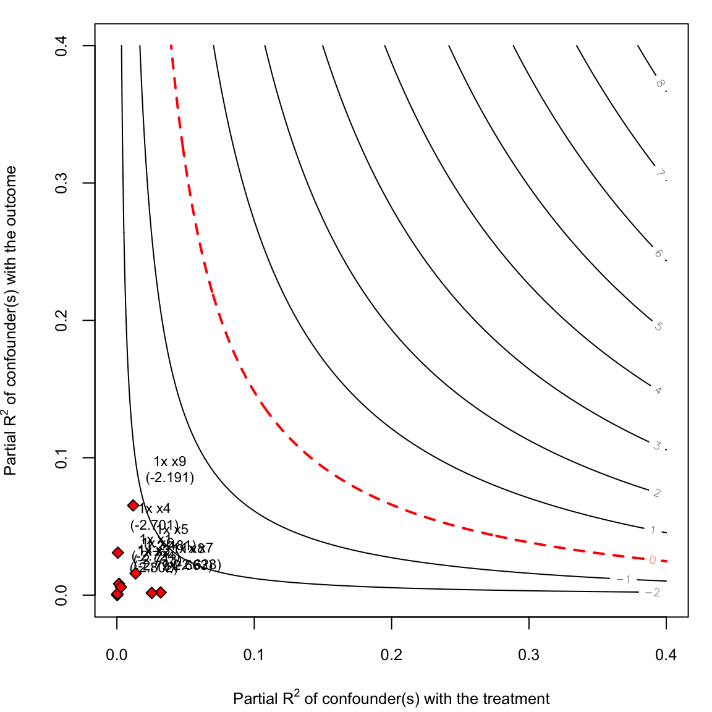
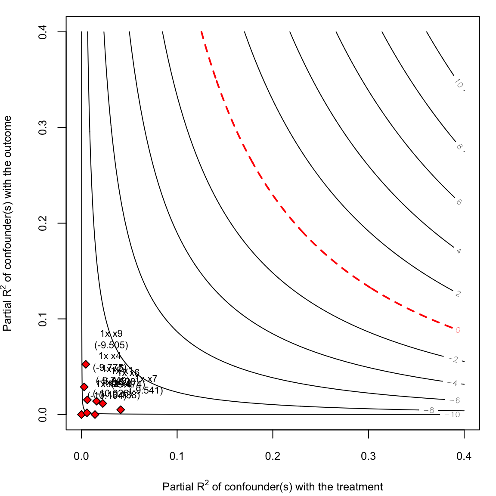

library(fdid)
library(sensemakr)
data(fdid)7 Sensitivity Analysis
After estimating treatment effects with fdid(), a natural next step is to assess how robust the results are to potential unmeasured confounders. We recommend using the sensemakr package (Cinelli and Hazlett (2020)) for this purpose.
sensemakr quantifies sensitivity in terms of partial \(R^2\): how strongly would an omitted variable need to be associated with both the treatment \(G\) and the change-score outcome \(\Delta Y\) to explain away the estimated effect. A full methodological discussion is in Xu, Zhao, and Ding (2026) (Appendix A3).
7.1 Setup
We use the prepared wide-format data from Chapter 2 and construct the change-score outcome: the average mortality during the famine years minus the pre-famine baseline.
mortality$uniqueid <- paste(as.character(mortality$provid),
as.character(mortality$countyid), sep = "-")
mortality$G <- ifelse(mortality$pczupu >= median(mortality$pczupu, na.rm = TRUE), 1, 0)
covar <- c("avggrain", "nograin", "urban", "dis_bj", "dis_pc",
"rice", "minority", "edu", "lnpop")
s <- fdid_prepare(
data = mortality,
Y_label = "mortality",
X_labels = covar,
G_label = "G",
unit_label = "uniqueid",
time_label = "year"
)
# Change-score outcome: mean(famine years) - reference year
# Covariates in s are stored as x1–x9 (matching order of X_labels above)
s$chg_mortality <- rowMeans(s[, paste0("Y_", 1958:1961)]) - s$Y_1957
xvars <- paste0("x", seq_along(covar))7.2 Sensitivity analysis
Fit the OLS change-score regression and pass it to sensemakr:
fml <- as.formula(paste("chg_mortality ~ G +", paste(xvars, collapse = " + ")))
mod <- lm(fml, data = s)
sens <- sensemakr(
model = mod,
treatment = "G",
benchmark_covariates = xvars,
kd = 1,
sensitivity.of = "t-value"
)
summary(sens)
#> Sensitivity Analysis to Unobserved Confounding
#>
#> Model Formula: chg_mortality ~ G + x1 + x2 + x3 + x4 + x5 + x6 + x7 + x8 + x9
#>
#> Null hypothesis: q = 1 and reduce = TRUE
#> -- This means we are considering biases that reduce the absolute value of the current estimate.
#> -- The null hypothesis deemed problematic is H0:tau = 0
#>
#> Unadjusted Estimates of 'G':
#> Coef. estimate: -2.8024
#> Standard Error: 0.7243
#> t-value (H0:tau = 0): -3.8691
#>
#> Sensitivity Statistics:
#> Partial R2 of treatment with outcome: 0.0162
#> Robustness Value, q = 1: 0.1203
#> Robustness Value, q = 1, alpha = 0.05: 0.0612
#>
#> Verbal interpretation of sensitivity statistics:
#>
#> -- Partial R2 of the treatment with the outcome: an extreme confounder (orthogonal to the covariates) that explains 100% of the residual variance of the outcome, would need to explain at least 1.62% of the residual variance of the treatment to fully account for the observed estimated effect.
#>
#> -- Robustness Value, q = 1: unobserved confounders (orthogonal to the covariates) that explain more than 12.03% of the residual variance of both the treatment and the outcome are strong enough to bring the point estimate to 0 (a bias of 100% of the original estimate). Conversely, unobserved confounders that do not explain more than 12.03% of the residual variance of both the treatment and the outcome are not strong enough to bring the point estimate to 0.
#>
#> -- Robustness Value, q = 1, alpha = 0.05: unobserved confounders (orthogonal to the covariates) that explain more than 6.12% of the residual variance of both the treatment and the outcome are strong enough to bring the estimate to a range where it is no longer 'statistically different' from 0 (a bias of 100% of the original estimate), at the significance level of alpha = 0.05. Conversely, unobserved confounders that do not explain more than 6.12% of the residual variance of both the treatment and the outcome are not strong enough to bring the estimate to a range where it is no longer 'statistically different' from 0, at the significance level of alpha = 0.05.
#>
#> Bounds on omitted variable bias:
#>
#> --The table below shows the maximum strength of unobserved confounders with association with the treatment and the outcome bounded by a multiple of the observed explanatory power of the chosen benchmark covariate(s).
#>
#> Bound Label R2dz.x R2yz.dx Treatment Adjusted Estimate Adjusted Se Adjusted T
#> 1x x1 0.0016 0.0082 G -2.7241 0.7223 -3.7715
#> 1x x2 0.0002 0.0000 G -2.8024 0.7248 -3.8664
#> 1x x3 0.0003 0.0009 G -2.7903 0.7245 -3.8513
#> 1x x4 0.0007 0.0309 G -2.7009 0.7137 -3.7844
#> 1x x5 0.0136 0.0158 G -2.4806 0.7239 -3.4266
#> 1x x6 0.0029 0.0058 G -2.7131 0.7236 -3.7493
#> 1x x7 0.0318 0.0019 G -2.6277 0.7358 -3.5712
#> 1x x8 0.0254 0.0016 G -2.6627 0.7335 -3.6301
#> 1x x9 0.0119 0.0653 G -2.1908 0.7048 -3.1082
#> Adjusted Lower CI Adjusted Upper CI
#> -4.1416 -1.3066
#> -4.2248 -1.3799
#> -4.2121 -1.3684
#> -4.1015 -1.3002
#> -3.9013 -1.0598
#> -4.1333 -1.2929
#> -4.0718 -1.1837
#> -4.1022 -1.2231
#> -3.5741 -0.8075plot(sens, show.unadjusted = FALSE)
7.2.1 Interpreting the plot
The contour plot visualises how a hypothetical unmeasured confounder would need to relate to both the treatment and the outcome to explain away the result:
- Horizontal axis: partial \(R^2\) of the confounder with \(G\) — how much variation in the treatment the confounder explains, beyond the observed covariates.
- Vertical axis: partial \(R^2\) of the confounder with \(\Delta Y\) — how much variation in the change-score outcome it explains.
- Contour lines: combinations that yield a given t-value. The outermost contour (labelled
t = 0) marks the boundary where the effect is no longer statistically distinguishable from zero. - Dots (benchmarks): each dot represents one observed covariate scaled to have the same association strength as that covariate (
kd = 1). If all benchmark dots fall well inside the t = 0 contour, the result is robust — an unobserved confounder would need to be substantially stronger than any observed covariate to nullify the finding.
In this application, the benchmarks cluster far from the t = 0 boundary, suggesting the moderation effect of high social capital on famine mortality is robust to moderate unmeasured confounding.
7.3 Continuous G
Repeat the analysis with lnpczupu as a continuous treatment:
mortality$lnpczupu <- log(mortality$pczupu + 1)
s_cont <- fdid_prepare(
data = transform(mortality, G = lnpczupu),
Y_label = "mortality",
X_labels = covar,
G_label = "G",
unit_label = "uniqueid",
time_label = "year"
)
s_cont$chg_mortality <- rowMeans(s_cont[, paste0("Y_", 1958:1961)]) - s_cont$Y_1957
fml_cont <- as.formula(paste("chg_mortality ~ G +", paste(xvars, collapse = " + ")))
mod_cont <- lm(fml_cont, data = s_cont)
sens_cont <- sensemakr(
model = mod_cont,
treatment = "G",
benchmark_covariates = xvars,
kd = 1,
sensitivity.of = "t-value"
)
summary(sens_cont)
#> Sensitivity Analysis to Unobserved Confounding
#>
#> Model Formula: chg_mortality ~ G + x1 + x2 + x3 + x4 + x5 + x6 + x7 + x8 + x9
#>
#> Null hypothesis: q = 1 and reduce = TRUE
#> -- This means we are considering biases that reduce the absolute value of the current estimate.
#> -- The null hypothesis deemed problematic is H0:tau = 0
#>
#> Unadjusted Estimates of 'G':
#> Coef. estimate: -10.1637
#> Standard Error: 1.4067
#> t-value (H0:tau = 0): -7.225
#>
#> Sensitivity Statistics:
#> Partial R2 of treatment with outcome: 0.0543
#> Robustness Value, q = 1: 0.2125
#> Robustness Value, q = 1, alpha = 0.05: 0.1599
#>
#> Verbal interpretation of sensitivity statistics:
#>
#> -- Partial R2 of the treatment with the outcome: an extreme confounder (orthogonal to the covariates) that explains 100% of the residual variance of the outcome, would need to explain at least 5.43% of the residual variance of the treatment to fully account for the observed estimated effect.
#>
#> -- Robustness Value, q = 1: unobserved confounders (orthogonal to the covariates) that explain more than 21.25% of the residual variance of both the treatment and the outcome are strong enough to bring the point estimate to 0 (a bias of 100% of the original estimate). Conversely, unobserved confounders that do not explain more than 21.25% of the residual variance of both the treatment and the outcome are not strong enough to bring the point estimate to 0.
#>
#> -- Robustness Value, q = 1, alpha = 0.05: unobserved confounders (orthogonal to the covariates) that explain more than 15.99% of the residual variance of both the treatment and the outcome are strong enough to bring the estimate to a range where it is no longer 'statistically different' from 0 (a bias of 100% of the original estimate), at the significance level of alpha = 0.05. Conversely, unobserved confounders that do not explain more than 15.99% of the residual variance of both the treatment and the outcome are not strong enough to bring the estimate to a range where it is no longer 'statistically different' from 0, at the significance level of alpha = 0.05.
#>
#> Bounds on omitted variable bias:
#>
#> --The table below shows the maximum strength of unobserved confounders with association with the treatment and the outcome bounded by a multiple of the observed explanatory power of the chosen benchmark covariate(s).
#>
#> Bound Label R2dz.x R2yz.dx Treatment Adjusted Estimate Adjusted Se Adjusted T
#> 1x x1 0.0158 0.0140 G -9.5277 1.4088 -6.7631
#> 1x x2 0.0000 0.0000 G -10.1635 1.4075 -7.2209
#> 1x x3 0.0142 0.0000 G -10.1382 1.4176 -7.1518
#> 1x x4 0.0029 0.0289 G -9.7745 1.3891 -7.0368
#> 1x x5 0.0062 0.0154 G -9.7489 1.4010 -6.9586
#> 1x x6 0.0223 0.0116 G -9.4744 1.4152 -6.6946
#> 1x x7 0.0410 0.0050 G -9.5415 1.4337 -6.6551
#> 1x x8 0.0058 0.0018 G -10.0256 1.4103 -7.1088
#> 1x x9 0.0046 0.0525 G -9.5054 1.3732 -6.9221
#> Adjusted Lower CI Adjusted Upper CI
#> -12.2926 -6.7629
#> -12.9259 -7.4012
#> -12.9203 -7.3561
#> -12.5006 -7.0484
#> -12.4985 -6.9994
#> -12.2519 -6.6969
#> -12.3552 -6.7277
#> -12.7935 -7.2578
#> -12.2005 -6.8104plot(sens_cont, show.unadjusted = FALSE)
The interpretation mirrors the binary case: benchmark dots well inside the t = 0 contour indicate that the moderation effect of social capital — measured continuously — is robust to moderate unmeasured confounding.